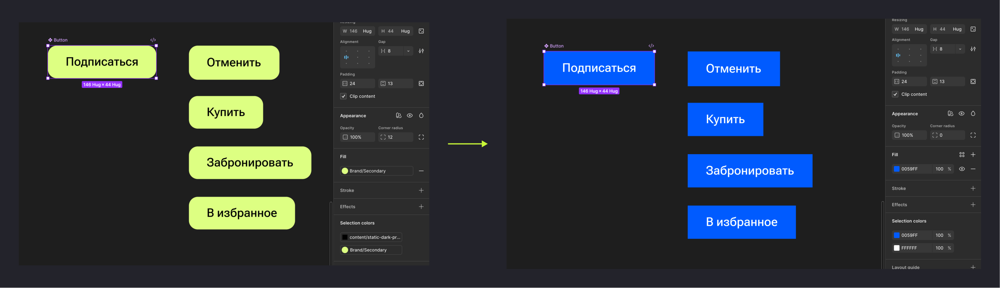
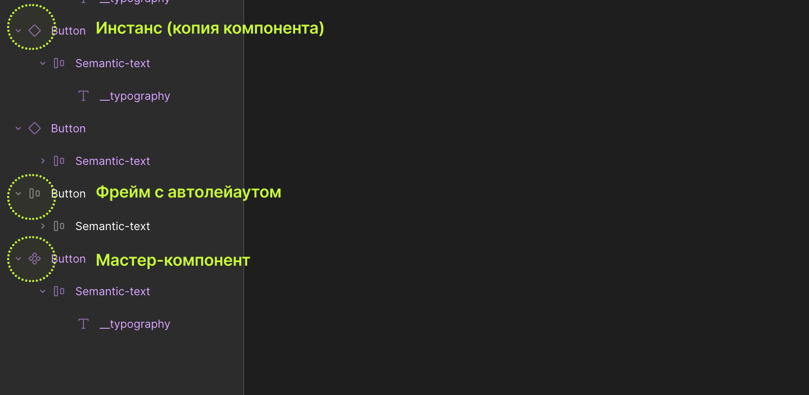
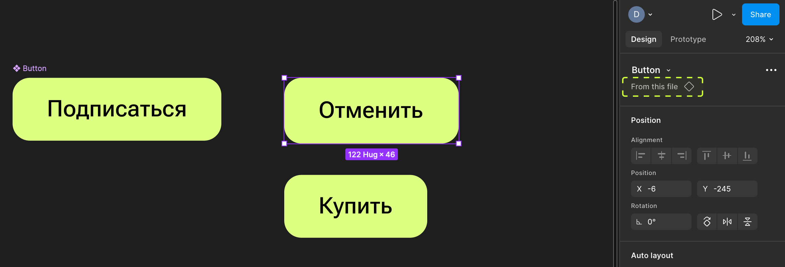
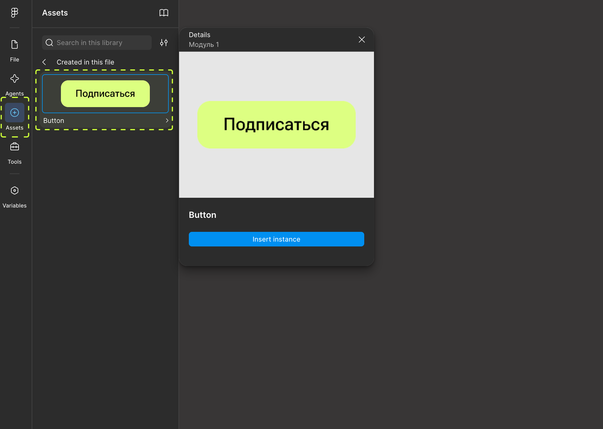
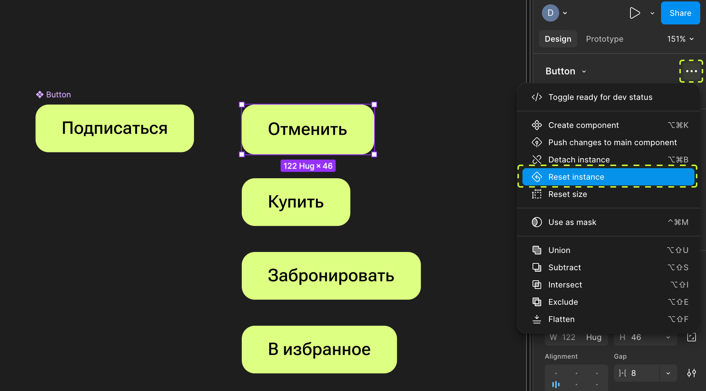
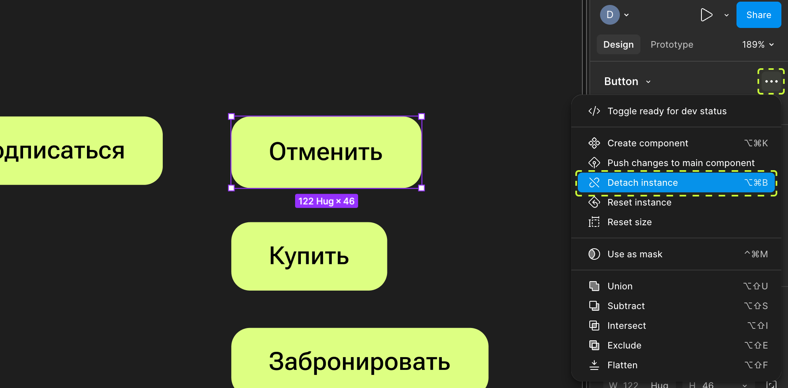
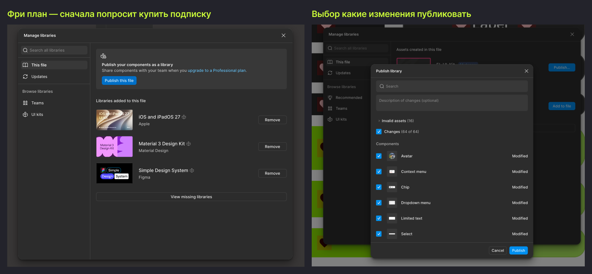

Мы уже коснулись компонентов на втором уроке — сегодня разбираем их по-настоящему, руками. Компоненты — это то, что превращает набор картинок в дизайн-систему: один раз собрал кнопку — и дальше просто копируешь её сотни раз, не боясь, что где-то она будет выглядеть иначе.
План урока
- Что такое компонент и зачем он нужен
- Создание компонента из готового элемента
- Мастер-компонент vs инстанс — где они хранятся
- Размещение инстансов и что с ними можно делать
- Переопределения (overrides) — что можно менять локально
- Отсоединение инстанса (Detach)
- Библиотека компонентов: локальная и командная
- Итог + домашнее задание
1. Что такое компонент и зачем он нужен
Компонент — это специальный тип фрейма, помеченный как «мастер» или «оригинал». От него можно создавать инстансы (instances) — связанные копии, которые визуально выглядят точно так же, но физически — это ссылка на оригинал, а не независимая копия.
Аналогия: компонент — это форма для выпечки, инстанс — это конкретное печенье. Меняете форму (оригинал) — все следующие (и уже существующие!) печенья меняют форму вместе с ней.

2. Создание компонента из готового элемента
Соберите элемент как обычный фрейм (например, кнопку с автолейаутом из прошлого урока), затем выделите его и превратите в компонент — горячая клавиша Ctrl/Cmd+Option/Alt+K, либо кнопка с ромбиком на верхней панели.
Значок компонента (фиолетовый ромб) появляется на иконке слоя в панели Layers — это визуальный маркер «это оригинал компонента», отличающий его от обычного фрейма.

3. Мастер-компонент vs инстанс — где они хранятся
Оригинал (мастер-компонент) обычно держат на отдельной странице файла — часто называют её «Components» или «UI Kit» — чтобы не искать его среди рабочих экранов. Оттуда компонент перетаскивают на реальные макеты — и на макете уже появляется инстанс: тот же ромб, но залитый сплошным цветом (не контурный, как у оригинала).
Проверить, что перед вами инстанс, просто: на панели Design у инстанса сверху есть надпись с именем и стрелкой — клик по стрелке мгновенно перебрасывает вас к мастер-компоненту.

4. Размещение инстансов и что с ними можно делать

Самый удобный способ добавлять инстансы — не копипастить с исходной страницы, а тянуть их из вкладки Assets (левая панель) — там показаны все компоненты, доступные в файле, с превью. Так исходный компонент остаётся на своём месте, а на экран падает именно инстанс.
Инстанс можно свободно перемещать, менять его размер (если внутри автолейаут — он подстроится по правилам Hug/Fill/Fixed из прошлого урока), удалять — все обычные операции с объектом доступны.
5. Переопределения (overrides) — что можно менять локально
У инстанса можно точечно менять некоторые свойства без разрыва связи с оригиналом — например, поменять текст на кнопке или заливку конкретной иконки внутри. Это называется override (переопределение). Мастер-компонент при этом не меняется, а инстанс запоминает, что именно вы переопределили.
Если потом отредактировать сам мастер-компонент — все инстансы обновятся, кроме тех свойств, которые были переопределены вручную (Фигма «уважает» ваши локальные правки и не затирает их).
Сбросить все переопределения инстанса и вернуть его «как в оригинале» — правой кнопкой мыши по инстансу → Reset instance.

6. Отсоединение инстанса (Detach)

Иногда нужно, чтобы объект перестал быть инстансом и превратился в обычный независимый фрейм — например, если нужно кардинально переделать структуру только в одном месте, не трогая систему. Для этого — Detach instance. После этого связь с мастер-компонентом разрывается навсегда (для этого конкретного объекта), и дальнейшие изменения оригинала на него уже не влияют.
Используйте Detach осторожно — это разовое исключение, а не рабочий инструмент на каждый день. Если детачить компоненты часто, дизайн-система быстро перестаёт быть системой.
7. Библиотека компонентов: локальная и командная
Компоненты, которые лежат в вашем файле, доступны только внутри этого файла — это локальная библиотека. Если нужно, чтобы теми же компонентами пользовались другие файлы команды (например, «UI Kit» отдельно от «Рабочих макетов») — библиотеку публикуют: Assets → Publish, и дальше подключают в других файлах через Assets → Team library.

Важно понимать эту механику, потому что именно так устроены реальные дизайн-системы в компаниях. Позже мы тоже сделаем и опубликуем свою мини дизайн-систему.
📎 Источник: Figma Help — Guide to components
Итог урока
Сегодня разобрались с базовой механикой компонентов: мастер и инстанс, где хранится, как переопределять и когда отсоединять. В следующем уроке — вторая часть, где научимся собирать компоненты со множеством состояний через варианты и свойства, чтобы не плодить отдельные компоненты на каждую мелочь.
Домашнее задание:
- Превратить собранную ранее кнопку в компонент, разместить его на отдельной странице «Components».
- Создать 3 инстанса этой кнопки на макете, у каждого поменять текст (override).
- Отредактировать мастер-компонент (например, изменить цвет заливки) и убедиться, что текст на инстансах остался прежним, а цвет обновился везде.